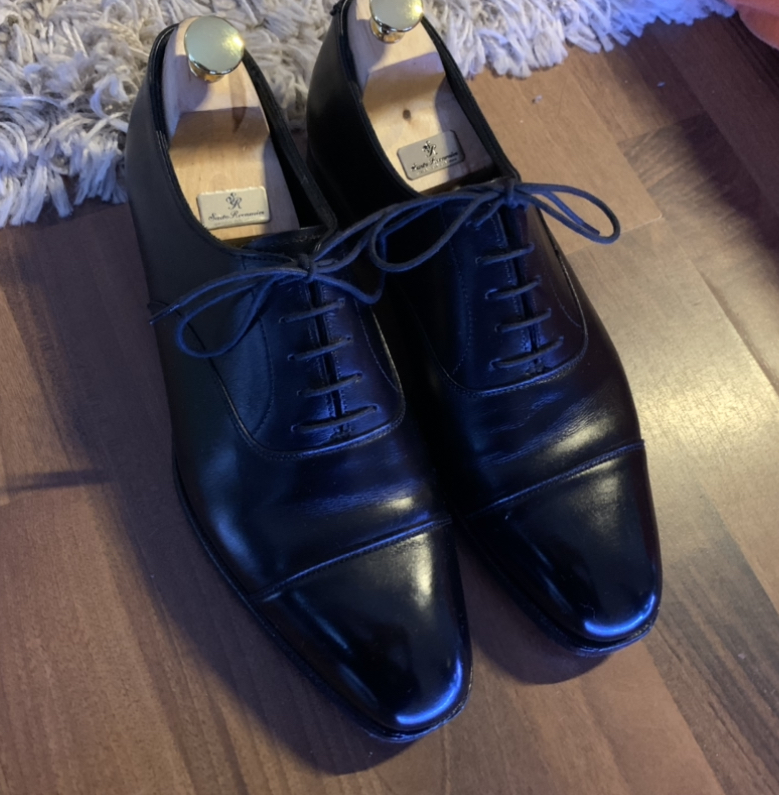
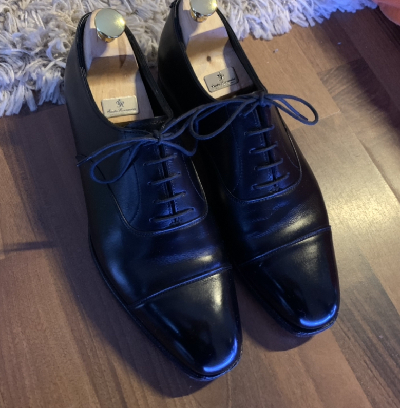

ドイツ滞在の記録
現在ドイツの大学院にいます. 内部モデル理論を研究しています.
31.08.2022 und 01.09.2022
羽田空港から出発しました. 直行便が現在40万円超えるのでカタール航空を利用して数回の乗り継ぎで行きました.
東京, バンコク, ドーハ, フランクフルト, ミュンスターの順で行きました.

バンコク, スワンナプーム空港で乗り継ぎの時に撮った写真.

タイ語で書かれたコアラのマーチ. 値段は日本と同じくらいだった記憶.


ドーハ, ハマド国際空港の様子. 空港はかなり大きかった. 8000円ぐらい課金してラウンジを利用した. かなり快適だった. シャワーを浴びることができます.

フランクフルトについたときの様子. 空港内だと日本とあまり変わらない気がする. もちろん日本語は通じない.
長期フライトの感想:
- 重量制限で替えのtシャツをスーツケースに入れたけど1枚は無理やり持っていくべきだった. (持ち込み手荷物の重量は測定されなかった. )
- トランジットの猶予時間はそれぞれ3時間ほどだったがちょうどよかった. これより短いと休めなかったりで大変そう.
- 一度シャワーを浴びることができたおかげでかなり楽だった. あとは課金してラウンジを使うべきだと思った.
- ネックピロー, 耳栓をちゃんと用意して正解だった.

フランクフルトからミュンスターへ行くときの上空の様子. ぱっと見は鹿児島の上空と変わらない気がしたが, 細かい部分は日本と違うように思われる.
まず住宅の形が違う. この写真には写っていないがあちこちに風力発電機があった.

ミュンスターについた時の様子. 午前10時半ごろ. 預けていた手荷物は18時に着くと言われる. まだ住む
場所どころかこの日泊まる場所すらなかったので荷物は明日回収することにする. ひとまず大学へ向かう.
バス停が全くわからず7キロあるリュックを背負って3, 4kmほど歩く. フライトの疲れも相まってかなりしんどい.
Internatinal Stundet Officeに相談しに行く. かなり粘ったところ二か月の一時的な滞在場所であるが無事見つかる. 生存.
ドイツではシェアアパートメントのことをWGというらしい. ミュンスターで一番大きい駅Hbfの裏にあるホテルに泊まった.
02.09.2022
ホテルにて起床. このホテル, アメニティが無い. めちゃくちゃ喉が渇いたり, 肌が乾燥したりする. 湿度が低いせい?? 水道水は普通に飲める. 硬水はまずいイメージがあったがそうでもない??
ホテルで朝食をとる. 昨日夜ご飯を食べてなかったのでその分かなり食べた. ハム, チーズ, パンがかなり美味しい.


街並みの様子


空港に荷物を救出しに行く. 受付に取りに行くも空港内のシステムには登録されてないと言われる. 焦る.
AirTagで荷物を探したところ空港内にあることがわかり探してもらった結果見つかった. 荷物検査はかなり緊張したが無事終わる. 再び中心街へ戻る. 4時間ぐらい時間を駅で潰す.
スタバとマックで時間潰した.


入居した部屋. ここに二か月住む. 家賃は光熱費込みで300ユーロ, ミュンスターでは平均的な価格である.
貸主はオマーンから来たらしい. とても優しい. ありがたい.
とりあえずジャケットをかける. 疲れたので寝る.
03.09.2022
今日は携帯やタブレットを充電するプラグを買いに行く.

今日はCrockett&Jones AUDLEYを履いた. 非常に良い靴です.

朝の街並み.

無事買えました. タイプC用も買った.
ドイツ人みんな身長高い. 男性女性ともに180cmオーバーが当たり前な印象. 190cmぐらいも普通にゴロゴロいる. 自分(174cm)より小さい人を見つけることが難しいぐらい.
服装の傾向はなんとなくわかってきた. 男性はトートバッグを使わないは本当っぽい. 手ぶらも多い. 残念. パーカー, ジーンズ, スポーティなシューズって感じの組み合わせが多い.
04.09.2022
眠くてダラダラしていた. 寝過ぎて頭が痛い. ぼやきを改修する. 数学に集中したいがすることがいっぱいだったりで困る.
ドイツビールを買いました. よくわからなかったので適当に3本買った. あとはおつまみのハム. これがめちゃくちゃ美味しい.


色々やることをやる. 研究の方も進めたい.
05.09.2022
ちゃんと早起きしてやることをやる. そのあとは数学をして一日過ごしたい. 朝ご飯はコーヒーとパン. パンはこれで70円ぐらい.

パンがとても塩辛かった. もう買うことはない. ルームメイトがキッチンを掃除したときにショートしたらしく, キッチンが昨日から使えない. お腹空いてどうしようも無くなったら外食にするかも.

窓からの景色. 先輩とCore Model Inductionについて議論した. 久しぶりに人と数学の話ができた気がする. 渡航準備で忙しくてあまり数学ができていなかった.
内部モデル理論の研究者になれるか不安な部分もあるけどやるしかない. 乗り越えていかないといけないという気持ちになった.
数学のことだったり, 生活のことだったり不安なことばかりな気がする. 異常に肌が乾燥する.
指導教官が賞を受賞していた. 最近デカい定理を示していて, それによるものだそうだ. 自分はP_maxをほとんど勉強していないのでどれだけ偉い結果なのかをちゃんと理解していない.
P_max勉強しないとなぁ... Normalizationだったり, P_maxだったり, Stacking Miceだったり, 勉強しないといけないことがいっぱいだ.
Core Model Inductionがかなり難しいのでそれにエネルギーを吸われている現状. P_max自体はMMを最近触っていたのでモチベーションは上がりつつある.
LarsonがSRPのをforceしたりしているのは気になる.
食事基本的に肉, 野菜(サラダ), パンしかない. パンは1個0.4ユーロから0．5ユーロほどで買える. 結構硬いが美味しい.
肉はソーセージを焼いたりして食べている. 肉を買ってきて調理する気にはまだならない.
野菜はサラダ用の野菜詰め合わせにサウザンドドレッシングをかけて食べている. 3食分が1ユーロから2ユーロくらい. ドイツ人のルームメイトがサラダを作っていたので真似してみようと思う.
06.09.2022
朝は曇りだった. 眺め.

午前中はドイツで使う普通預金口座の開設をした. N26というところを使った. 噂には本人確認のビデオチャットがかなり難しいと聞いていたが一発で成功した.
円安がかなり進行している心配だ. 家でドイツ語の課題をやったり, 数学したりした. 夕方お腹が空いたのでスーパーに買い出し. その時の風景.

師匠に教えてもらったペペロンチーノを作ることにした. 唐辛子, きのこ, パスタを買った. あとビールも買った. 飲みながらこれを書いている. 1本500mLで0.4ユーロ, 安い.
きのこのレパートリーが2種類しかなかった. きのことソーセージのペペロンチーノ. 師匠直伝なのでうまい.


07.09.2022
あんまり進捗がない1日だった. 安さに釣られてディスカウントスーパーで買ったパンが想像を絶する不味さだった. 口に入れた瞬間体が拒絶して吐きそうになった.

ドイツのスーパーにも序列があって, パンはそれなりのスーパーかベーカリーで買うことが推奨されることを知った.
食べるものがなくなったのでREWEというドイツで有名なスーパーマーケットに行った. ここのパンはちゃんと美味しい.
好きなタイプのパンが1個0.25ユーロだったので8個買った.
あとはソーセージも買った. 焼いて食べた.

靴の手入れもした.

 

明日は溜まっているドイツ語の課題とCMIをやる.
感想